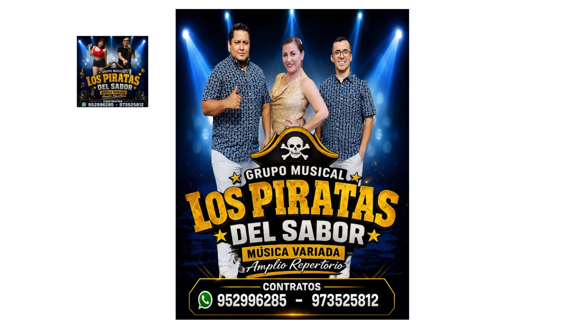
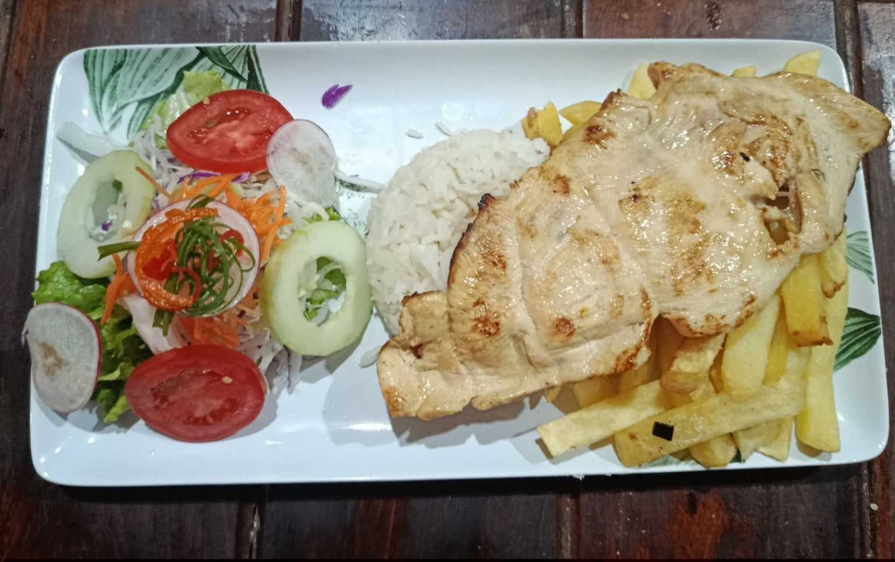
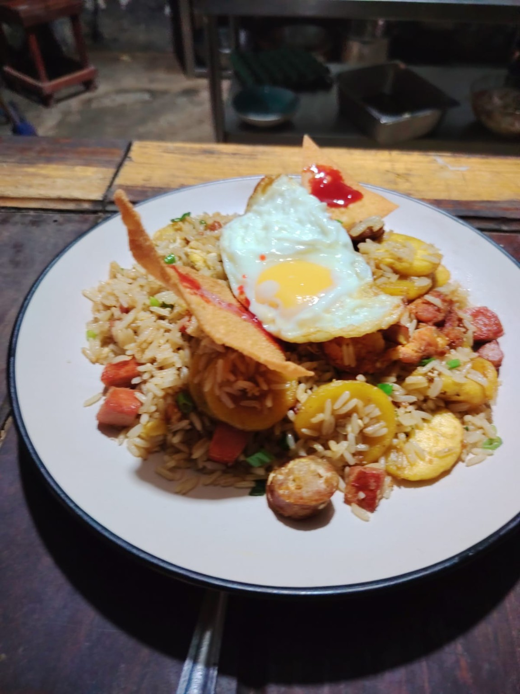
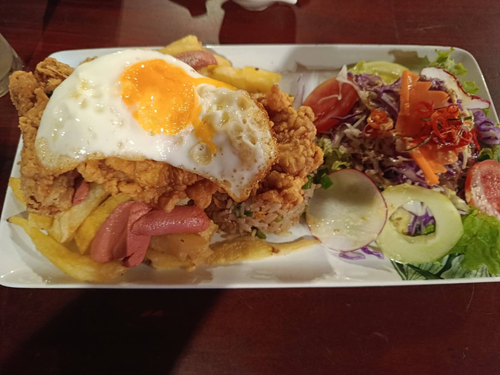
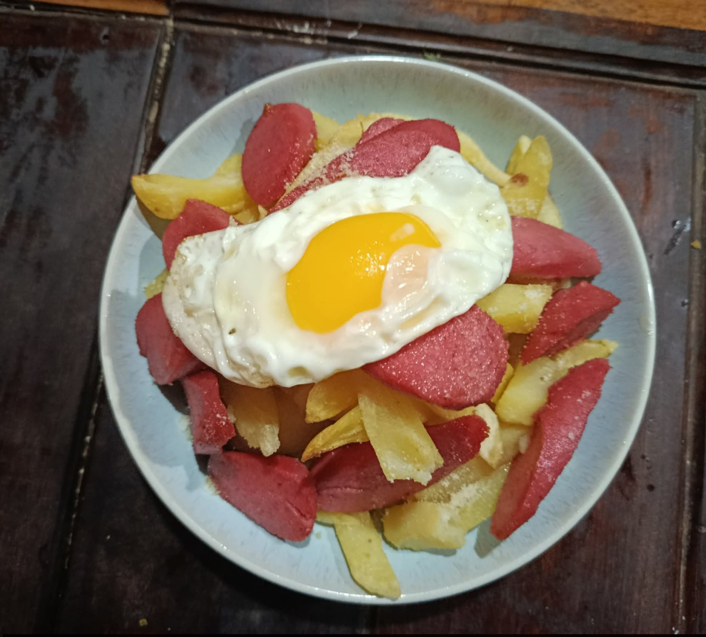
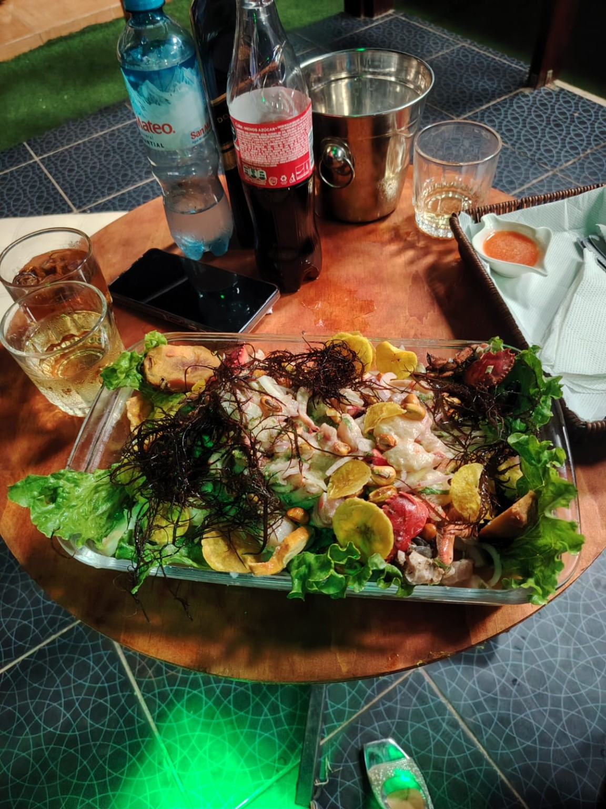

PUCALLPA · COMIDA · MÚSICA · DIVERSIÓN
☠
LOS PIRATAS
DEL SABOR
Comida, música y ambiente pirata en Pucallpa. Disfruta nuestros platos y contrata al Grupo Musical Los Piratas del Sabor para tu evento.
🎤 Música en vivoAmbiente 100% pirata
🍽️ Platos a la cartaVariedad y buen sabor
🎉 Contratos para eventosCumpleaños, aniversarios y más

EL RESTOBAR
Sabor, música y ambiente pirata
Disfruta nuestros platos, bebidas, karaoke y noches con música en vivo en un ambiente relajado para compartir con amigos y familia.
☠
Hoy se come,
Hoy se come,
se canta y se disfruta.
Pregunta por el menú del día y los platos disponibles.
Consultar menú →NUESTRA CARTA
Algunos favoritos de la casa
Esta es una muestra. Podemos convertir esta sección en tu carta completa y actualizar precios cuando quieras.
PARA TU EVENTO
Grupo Musical
Los Piratas del Sabor

Llevamos música y animación para cumpleaños, locales, fiestas, aniversarios y eventos privados dentro y fuera de Pucallpa.
3 integrantes
4 integrantes
5 integrantes
6 integrantes
Cotizar presentación
GALERÍA
Así se vive Los Piratas del Sabor





ENCUÉNTRANOS
Estamos en Pucallpa
Av. Universitaria Mz C Lt 13, cruce con Antúnez de Mayolo, frente al parque Lagarto.